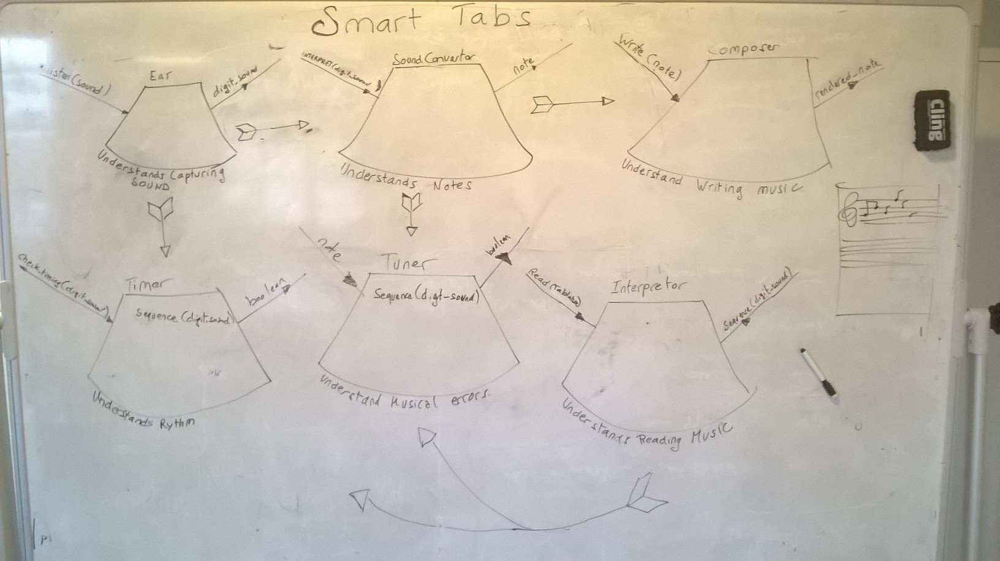

Smart Tabs #2
In case you missed my previous Smart Tabs post I am trying to build an app, which would sort of be Guitar Hero meets Shazam, or rather I happen to know Guitar Hero and Shazam and decide to organise a blind date for them( blind because I will use technology that is new to me...I might need to refactor that analogy).
This project is the first one that I am going to work on by myself. Still I intend to apply the principles I learnt so far, test driven development, refactoring, retrospectives (I will do stand up by myself but whilst walking and talking in my head, so nobody thinks I am crazy).
First of all to stick to agile principles I had to translate the functionalities of my application into user stories (you can have a look at them here), those functionalities being:
- Notes are being displayed as they are being played.
- There is a list of songs to play, when chosen they display a tablature (or something similar).
- Notes are changing visually when they are being played to check.
- The tablature should show the part the player is about to play.
Coding, involves being stuck from time to time, and often when stuck on a particular issue, loosing sight of what the structure of should be like can happen. An easy way to exit the "What the hell am I doing again?" zone is to diagram what you are trying to achieve.
The following is the domain model that I originally designed, polygons representing a classes and arrow representing messages between sent to those classes

Although domain modelling is convenient, it is also important to remember that ( if you happen not to be perfect, like me) you might be subject to make some errors when creating it and therefore not to follow it religiously all the way through the project.
In this instance for example I would be in trouble as I forgot to include an object to handle the output. Oops....